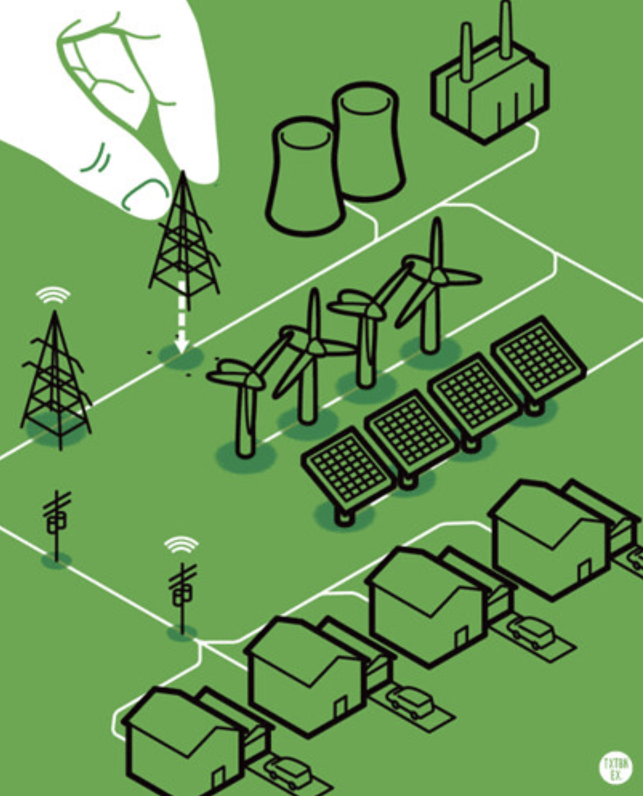

Electric grid gets uprated
Currently many parts of the U.S. suffer congestion, and not the kind caused by the seasonal flu. Electric transmission capacity is increasingly limited in areas where renewable energy can be rapidly deployed. The town of Odessa, in western Texas, for example, suffers from acute congestion due to large wind and solar farms built there without increases to transmission capacity. Lack of transmission capacity is a key barrier to new renewables projects, and “curtailment” results in many gigawatt-hours of electricity lost each year.
Looking to 2030 and beyond, the U.S. grid’s ability to move electricity could increase significantly, even without building more transmission lines. There are several promising ways to expand the capacity of existing transmission lines:
- 1. Existing high voltage alternating current (HVAC) transmission lines could be converted to high voltage DC (HVDC) lines.
- 2. Existing transmission lines could be replaced with new, advanced-composite alloys that can carry more current safely
- 3. Existing lines could be wrapped in superconducting tape to increase capacity
The result? A significant up-rate to our electric grid.
Let’s carry more power with less of this! New York 1890s - Transmission lines, telephone lines by manhhai